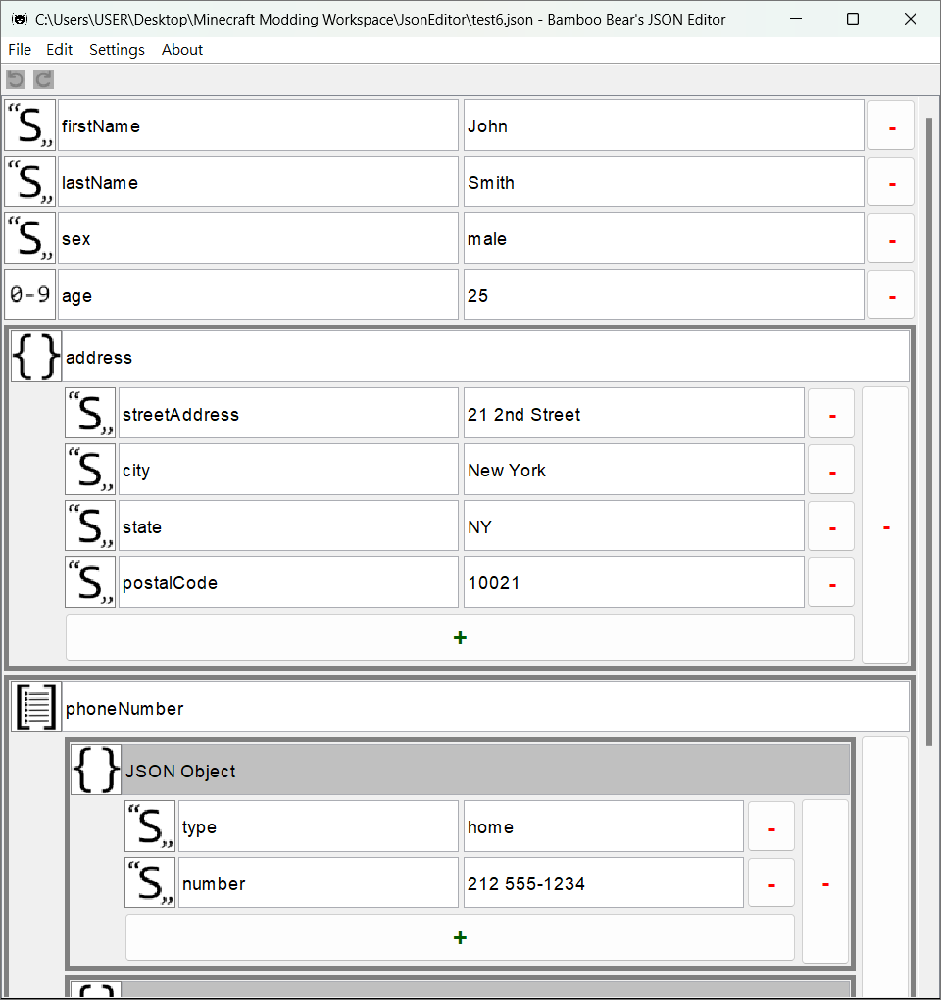

Version: 0.0.0 (Beta)
Bamboo Bear's JSON Editor ("JSON Editor") is a Java program used for editing JSON files.
JSON (JavaScript Object Notation), is a language-independent, lightweight data interchange format, and is widely used.
There are 6 data types in JSON: Boolean, Number, String, Null, Object, and Array (See also: https://www.json.org/json-en.html), where objects and arrays can contain other JSON elements. A JSON file usually includes many objects and arrays, potentially forming a complex structure. In this case, using the "JSON Editor" to open it might be a good choice.
By opening a JSON file in the "JSON Editor", you can clearly see the structure of the JSON data (like the image above). Additionally, editing JSON files in the "JSON Editor" can help you prevent formatting errors caused by missing punctuation marks or other issues.
the "JSON Editor" uses the UTF-8 for both reading and saving files. Therefore, when you open the file whose character encoding is not UTF-8, the garbled characters may appear in the "JSON Editor", especially for the files that contain non-ASCII characters.
JSON null (null) is one of the data types in JSON, but the "JSON Editor" does not support it until version 0.1.0. When loading JSON files, all JSON null values (null) will be converted to JSON string "null" in the "JSON Editor", and there is no way to add a JSON null in the "JSON Editor".
If the JSON file contains JSON null values (null) that are very important for the data, it is not recommended to open, edit, or save the file by the "JSON Editor" before the "JSON Editor" supports JSON null.
JSON allows any types of JSON Element to be "the root element", However, the "JSON Editor" only allows JSON objects and JSON arrays to be the root element.
When you start editing a new JSON file in the "JSON Editor", a JSON object will always be the root element. Having a JSON array as the root element only applies when you open a JSON file whose root element is a JSON array.
If you find any issues in the "JSON Editor", please report them at https://github.com/BambooBear0413/JsonEditor/issues.
The JSON string includes escape sequences to represent certain control characters, such as line feeds and horizontal tabs, as well as special characters like double quotes (") and backslashes (\).
When you edit JSON strings in the "JSON Editor", you don't have to use \" to represent ", but most characters that should be represented by escape sequences in a JSON string, such as line feed, etc., still cannot be entered directly in the "JSON Editor". Therefore, there are specific escape sequences you can use when editing JSON strings in the "JSON Editor".
All escape sequences that can be used when editing JSON strings in the "JSON Editor" are listed below:
\\: \ itself.\b: Backspace (U+0008).\f: Form Feed (U+000C).\n: Line Feed (U+000A).\r: Carriage Return (U+000D).\t: Horizontal Tab (U+0009).\uXXXX (where XXXX is a four-digit hexadecimal number): The character corresponding to XXXX in UTF-16 encoding.If \ is immediately followed by characters that are not listed above, or if there is no character immediately following \, when the "JSON Editor" saves the file, it will output \\, which represent \ in the JSON string, along with any characters that follow it (if any).
\ and \\ result in \\.\u718A results in 熊 (U+718A), and \u718 result in \\u718.\a results in \\a.If the content of a JSON string contains \, it is recommended to represent it as \\ to avoid unexpected situations.
| Shortcut | Action | Notes |
|---|---|---|
| Ctrl + Z | Undo | |
| Ctrl + Y | Redo | |
| Ctrl + N | New File | |
| Ctrl + O | Open File | |
| Ctrl + S | Save | |
| Ctrl + Shift + S | Save As... |
Java 17 is required to run the "JSON Editor", If your computer hasn't installed Java 17 or a later version, you can obtain it from one of the sources listed below. (Java obtained from different sources may have slight differences, but these differences will not affect the functionality of the "JSON Editor".)
If your computer already has Java installed, or you have just installed it, you can open a command line tool, such as Command Prompt (cmd) in Windows, and run the command java --version to check the Java version.
*Java 21 may be required in future versions. Therefore, when installing Java, it is advisable to consider installing Java 21.
en_us) *default languagezh_tw)zh_cn)settings.properties)The settings of the "JSON Editor" are saved in the file settings.properties. They can be changed through the settings dialog in the "JSON Editor" or edited by another application (this is not recommended).
All settings in settings.properties are listed below, and each of them can be changed in the "JSON Editor" (some can only be changed when experimental features are enabled).
| Key | Type | Default Value | Notes |
|---|---|---|---|
language |
language code | en_us |
|
isExperimentalFeaturesEnabled |
Boolean | false |
Enable experimental features. The change will take effect after restarting the program. |
fontFamily |
font family name | Dialog |
Dialog is the name of the Java default font family. Experimental Feature |
fontSize |
integer | 15 |
Font size. The minimum value is 8, and the maximum value is 28. |
enablesPrettyPrinting |
Boolean | false |
After enabling pretty printing, the JSON file saved by the "JSON Editor" will be more readable, but the file size will be slightly larger compared to when pretty printing is disabled. |
enablesHtmlEscaping |
Boolean | false |
After enabling HTML escaping, characters with special meaning in HTML, such as =, >, and <, will be escaped when saving the file. |
enablesUnicodeEscaping |
Boolean | false |
After enabling Unicode escaping, non-ASCII characters will be escaped when saving the file. Experimental Feature |
For settings that are "experimental features", once the experimental features are disabled and the "JSON Editor" is restarted, the values of these settings will be restored to their default values.
When the "JSON Editor" starts, if it detects any "unknown settings" in the settings.properties, it will store them in memory. When the user changes and applies settings in the "JSON Editor", the program will rewrite the file, and the "unknown settings" will be written back into the file (under the "Unknown Properties" comment). However, the original comment in the setting.properties will be removed after the rewrite.
Plugins of the "JSON Editor" are similar to datapacks in Minecraft, a famous game; they allow you to add content or functionality to the "JSON Editor" without programming.
A plugin can be either a directory or a ZIP file with the .zip extension that contains the file plugin.json.
Plugins must be placed in the "plugins" direcotory, which is automatically created when the "JSON Editor" starts, or in one of its subdirectories.
When the "JSON Editor" searches for plugins, it scans all directories and ZIP files within the "plugins" directory. If it finds a directory containing plugin.json, that directory will be identified as a plugin; otherwise, the "JSON Editor" will continue scanning the subdirectories and ZIP files within it. If it finds ZIP file containing plugin.json, the ZIP file will be identified as a plugin; otherwise, it will be ignored.
lang<Language ID>.jsonplugin.jsonplugin.jsonThe plugin.json file is a required file for each plugin. It contains information such as the "plugin ID", and serves as the primary reference for the "JSON Editor" to identify plugins.
The structure of the plugin.json file is as follows. Text in bold red represents required JSON elements.
a-z), and can only contain lowercase letters (a-z), numbers (0-9), and underscores (_). Its length must be between 2 and 64 characters (inclusive). An illegal plugin ID will prevent the plugin from being loaded!| Plugin Format Version | "JSON Editor" Version | Changes or Notes |
|---|---|---|
| 1 | 0.0.0- |
|
Language files are used to add translation to the "JSON Editor", whether to improve incomplete vanilla translations, add new languages for vanilla content, or provide translations for plugin content.
All language files (including vanilla translations) are in JSON format with the .json extension and are placed in the lang directory. The filename will be used as the "language ID" for the "JSON Editor" to identify the language.
The language ID must start with a lowercase letter (a-z), and can only contain lowercase letters (a-z), numbers (0-9), and underscores (_). Its length must be between 2 and 64 characters (inclusive). An illegal language ID will prevent the language file from being loaded!
When the "JSON Editor" searches for translation content, it first looks in the user's current language. If the content is not found or is an empty string, it will search in the "alternative languages" specified in the language file. If no "alternative languages" are specified or the content is still not found or is an empty string, the "default value" (en_us) will be searched. If the content is still not found or is an empty string, the "translation key" will be used as the translation content.
Therefore, making en_us.json is essential when adding translations for plugin content.
If the same "translation keys" appear in multiple language files of the same language (a "translation key conflict" occurs), the "JSON Editor" will only use the translation loaded first. In other words, plugins cannot overwrite vanilla translations because vanilla translations are always loaded before plugins.
Therefore, translation keys for plugin content should include the "plugin ID" to reduce the probability of translation key conflicts.
The structure of the language file has two forms, as follows:
Notes: The root element of the second form can contain multiple strings and objects. Their order does not affect whether the content will be loaded, but it does affect the loading sequence.
It is important to notice that the support for formatting, such as line breaks, depends on the component displaying the content. If the component does not support line breaks, using \n in the language file will not achieve the expect effect.
If you want to make the language that does not supported by the "JSON Editor", you have to notice "parameters in translations".
In the "JSON Editor", all the translation content are handle as "formatted strings" (see the format in the Java SE API Documents, or see this article), so that we can put some arguments into content. And in the vanilla content, there are some translations have parameters, such as filename. Because all the translations are formatted strings, if the content contains % character, it should be represented by %% (like the escape sequence \\); otherwise, something unexpected might occur.
All the translation keys of the "JSON Editor" vanilla content that have parameters are listed below:
| Translation Key | Parameter Count | Description |
|---|---|---|
json_editor.save_file.file |
1 |
|
json_editor.error.failed_to_save_file |
1 |
|
json_editor.warning.browse |
1 |
|
json_editor.warning.open_file |
1 |
|
json_editor.warning.open_file.file_not_exist |
1 |
|
Following the suggestions below or not does not affect the loading of language files; it is only for reference when making language files.
The language ID is recommended to consist of two parts: "language" and country or region. For some languages, an additional script part, such as Latin or Cyrillic, can be added. Each part is separated by underscore (_). Although the maximum length of the language ID is 64 characters, it is recommended that the "language" and "country or region" parts be between 2 and 4 characters (inclusive).
en_us, where en represents "English", and us represents "the USA".kk_kz_latin, where kk represents "Kazakh", kz represents "Kazakhstan", and latin represents "Latin script". If you want to make a langauge file for the same language written in "Cyrillic script", the language ID can be named kk_kz_cyrillic, where cyrillic represents "Cyrillic script".The langauge name is recommended to consist of two parts: "language" and country or region, similar to the language ID, where "country or region" should be enclosed in parentheses(()), or other punctuations with the same or similar meanings. The langauge name should be written in that language if possible
zh_tw is "繁體中文（台灣）", where "繁體中文" means "Traditional Chinese", and "台灣", which is enclosed by fullwidth parentheses (（）), means Taiwan.en_us is "English (US)", where the "country or region" (US) part is enclosed by (halfwidth) parentheses (()).Translation keys should, as much as possible, represent their meaning (or where they are used) and are recommended to be written in English. Words in translation keys should be written in lowercase, each part should be separated by dots (.), and using underscores (_) to connect words within each part (Snake case).
json_editor.settings.language, where json_editor represents that the key is used by vanilla content (for plugin content, this part can be replaced by the plugin id), settings represents that the key is related to the settings, and language represents that the key is related to "language". In fact, the translation key json_editor.settings.langauge is used for the label of the "Language" option in the settings screen.Version: 2.10.1
Copyright 2008 Google Inc.
A Java library developed by Google that serializes Java objects to JSON, and deserializes JSON to Java objects (Java objects <-> JSON)
License: Apache License Version 2.0
See also: https://github.com/google/gson
zh_cn）